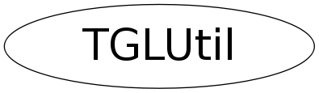

Function Members (Methods)
public:
| virtual | ~TGLUtil() |
| static void | BeginAttLine(const TAttLine& aline, Char_t transp, Int_t pick_radius = 0, Bool_t selection = kFALSE) |
| static void | BeginExtendPickRegion(Float_t scale) |
| static void | CheckError(const char* loc) |
| static TClass* | Class() |
| static void | Color(const TGLColor& color) |
| static void | Color3f(Float_t r, Float_t g, Float_t b) |
| static void | Color3fv(const Float_t* rgb) |
| static void | Color3ub(UChar_t r, UChar_t g, UChar_t b) |
| static void | Color3ubv(const UChar_t* rgb) |
| static void | Color4f(Float_t r, Float_t g, Float_t b, Float_t a) |
| static void | Color4fv(const Float_t* rgba) |
| static void | Color4ub(UChar_t r, UChar_t g, UChar_t b, UChar_t a) |
| static void | Color4ubv(const UChar_t* rgba) |
| static void | ColorAlpha(const TGLColor& color, UChar_t alpha) |
| static void | ColorAlpha(const TGLColor& color, Float_t alpha) |
| static void | ColorAlpha(Color_t color_index, Float_t alpha = 1) |
| static void | ColorTransparency(Color_t color_index, Char_t transparency = 0) |
| static void | DrawLine(const TGLLine3& line, TGLUtil::ELineHeadShape head, Double_t size, const UChar_t* rgba) |
| static void | DrawLine(const TGLVertex3& start, const TGLVector3& vector, TGLUtil::ELineHeadShape head, Double_t size, const UChar_t* rgba) |
| static void | DrawNumber(const TString& num, const TGLVertex3& pos, Bool_t center = kFALSE) |
| static void | DrawReferenceMarker(const TGLCamera& camera, const TGLVertex3& pos, Float_t radius = 3, const UChar_t* rgba = 0) |
| static void | DrawRing(const TGLVertex3& center, const TGLVector3& normal, Double_t radius, const UChar_t* rgba) |
| static void | DrawSimpleAxes(const TGLCamera& camera, const TGLBoundingBox& bbox, Int_t axesType) |
| static void | DrawSphere(const TGLVertex3& position, Double_t radius, const UChar_t* rgba) |
| static void | EndAttLine(Int_t pick_radius = 0, Bool_t selection = kFALSE) |
| static void | EndExtendPickRegion() |
| static UInt_t | GetDefaultDrawQuality() |
| static UInt_t | GetDrawQuality() |
| static GLUtesselator* | GetDrawTesselator3dv() |
| static GLUtesselator* | GetDrawTesselator3fv() |
| static GLUtesselator* | GetDrawTesselator4dv() |
| static GLUtesselator* | GetDrawTesselator4fv() |
| static Float_t | GetLineWidthScale() |
| static Float_t | GetPointSizeScale() |
| virtual TClass* | IsA() const |
| static Bool_t | IsColorLocked() |
| static Float_t | LineWidth() |
| static void | LineWidth(Float_t line_width) |
| static UInt_t | LockColor() |
| static Float_t | PointSize() |
| static void | PointSize(Float_t point_size) |
| static void | RenderCrosses(const TAttMarker& marker, Float_t* p, Int_t n, Bool_t sec_selection = kFALSE) |
| static void | RenderCrosses(const TAttMarker& marker, const vector<Double_t>& points, Double_t dX, Double_t dY, Double_t dZ) |
| static void | RenderPoints(const TAttMarker& marker, const vector<Double_t>& points) |
| static void | RenderPoints(const TAttMarker& marker, Float_t* p, Int_t n, Int_t pick_radius = 0, Bool_t selection = kFALSE, Bool_t sec_selection = kFALSE) |
| static void | RenderPolyLine(const TAttLine& aline, Char_t transp, Float_t* p, Int_t n, Int_t pick_radius = 0, Bool_t selection = kFALSE) |
| static void | RenderPolyMarkers(const TAttMarker& marker, const vector<Double_t>& points, Double_t dX, Double_t dY, Double_t dZ) |
| static void | RenderPolyMarkers(const TAttMarker& marker, Char_t transp, Float_t* p, Int_t n, Int_t pick_radius = 0, Bool_t selection = kFALSE, Bool_t sec_selection = kFALSE) |
| static void | ResetDrawQuality() |
| static void | SetDefaultDrawQuality(UInt_t dq) |
| static void | SetDrawColors(const UChar_t* rgba) |
| static void | SetDrawQuality(UInt_t dq) |
| static void | SetLineWidthScale(Float_t scale) |
| static void | SetPointSizeScale(Float_t scale) |
| virtual void | ShowMembers(TMemberInspector& insp) |
| virtual void | Streamer(TBuffer& b) |
| void | StreamerNVirtual(TBuffer& b) |
| static UInt_t | UnlockColor() |
Data Members
public:
| enum ELineHeadShape { | kLineHeadNone | |
| kLineHeadArrow | ||
| kLineHeadBox | ||
| }; | ||
| enum EAxesType { | kAxesNone | |
| kAxesEdge | ||
| kAxesOrigin | ||
| }; |
Class Charts
{kind=link}
{kind=link}
{kind=link}
{kind=link}

Function documentation
GLUtesselator* GetDrawTesselator3fv()
Returns a tesselator for direct drawing when using 3-vertices with single precision.
GLUtesselator* GetDrawTesselator4fv()
Returns a tesselator for direct drawing when using 4-vertices with single precision.
GLUtesselator* GetDrawTesselator3dv()
Returns a tesselator for direct drawing when using 3-vertices with double precision.
GLUtesselator* GetDrawTesselator4dv()
Returns a tesselator for direct drawing when using 4-vertices with double precision.
void CheckError(const char* loc)
Check current GL error state, outputing details via ROOT Error method if one
void ColorAlpha(Color_t color_index, Float_t alpha = 1)
Set color from color_index and GL-style alpha (default 1).
void ColorTransparency(Color_t color_index, Char_t transparency = 0)
Set color from color_index and ROOT-style transparency (default 0).
void PointSize(Float_t point_size)
Set the point-size, taking the global scaling into account. Wrapper for glPointSize.
void LineWidth(Float_t line_width)
Set the line-width, taking the global scaling into account. Wrapper for glLineWidth.
void RenderPolyMarkers(const TAttMarker& marker, Char_t transp, Float_t* p, Int_t n, Int_t pick_radius = 0, Bool_t selection = kFALSE, Bool_t sec_selection = kFALSE)
Render polymarkers at points specified by p-array. Supports point and cross-like styles.
void RenderPolyMarkers(const TAttMarker& marker, const vector<Double_t>& points, Double_t dX, Double_t dY, Double_t dZ)
Render polymarkers at points specified by p-array. Supports point and cross-like styles. Color is set externally. Lighting is disabled externally.
void RenderPoints(const TAttMarker& marker, Float_t* p, Int_t n, Int_t pick_radius = 0, Bool_t selection = kFALSE, Bool_t sec_selection = kFALSE)
Render markers as circular or square points. Color is never changed.
void RenderPoints(const TAttMarker& marker, const vector<Double_t>& points)
Render markers as circular or square points. Color is never changed.
void RenderCrosses(const TAttMarker& marker, Float_t* p, Int_t n, Bool_t sec_selection = kFALSE)
Render markers as crosses. Color is never changed.
void RenderCrosses(const TAttMarker& marker, const vector<Double_t>& points, Double_t dX, Double_t dY, Double_t dZ)
Render markers as crosses. Color is never changed.
void RenderPolyLine(const TAttLine& aline, Char_t transp, Float_t* p, Int_t n, Int_t pick_radius = 0, Bool_t selection = kFALSE)
Render poly-line as specified by the p-array.
void BeginAttLine(const TAttLine& aline, Char_t transp, Int_t pick_radius = 0, Bool_t selection = kFALSE)
Setup drawing parrameters according to passed TAttLine.
void EndAttLine(Int_t pick_radius = 0, Bool_t selection = kFALSE)
Restore previous line drawing state.
void SetDrawColors(const UChar_t* rgba)
Set basic draw colors from 4 component 'rgba' Used by other TGLUtil drawing routines Sets basic (unlit) color - glColor and also GL materials (see OpenGL docs) thus: diffuse : rgba ambient : 0.0 0.0 0.0 1.0 specular : 0.6 0.6 0.6 1.0 emission : rgba/4.0 shininess: 60.0 emission is set so objects with no lights (but lighting still enabled) are partially visible
void DrawSphere(const TGLVertex3& position, Double_t radius, const UChar_t* rgba)
Draw sphere, centered on vertex 'position', with radius 'radius', color 'rgba'
void DrawLine(const TGLLine3& line, TGLUtil::ELineHeadShape head, Double_t size, const UChar_t* rgba)
Draw thick line (tube) defined by 'line', with head at end shape 'head' - box/arrow/none, (head) size 'size', color 'rgba'
void DrawLine(const TGLVertex3& start, const TGLVector3& vector, TGLUtil::ELineHeadShape head, Double_t size, const UChar_t* rgba)
Draw thick line (tube) running from 'start', length 'vector', with head at end of shape 'head' - box/arrow/none, (head) size 'size', color 'rgba'
void DrawRing(const TGLVertex3& center, const TGLVector3& normal, Double_t radius, const UChar_t* rgba)
Draw ring, centered on 'center', lying on plane defined by 'center' & 'normal' of outer radius 'radius', color 'rgba'
void DrawReferenceMarker(const TGLCamera& camera, const TGLVertex3& pos, Float_t radius = 3, const UChar_t* rgba = 0)
Draw a sphere- marker on world-coordinate 'pos' with pixel radius 'radius'. Color argument is optional.
void DrawSimpleAxes(const TGLCamera& camera, const TGLBoundingBox& bbox, Int_t axesType)
Draw simple xyz-axes for given bounding-box.
void DrawNumber(const TString& num, const TGLVertex3& pos, Bool_t center = kFALSE)
Draw number in string 'num' via internal 8x8-pixel bitmap on vertex 'pos'. If 'center' is true, the number is centered on 'pos'. Only numbers, '.', '-' and ' ' are supported.